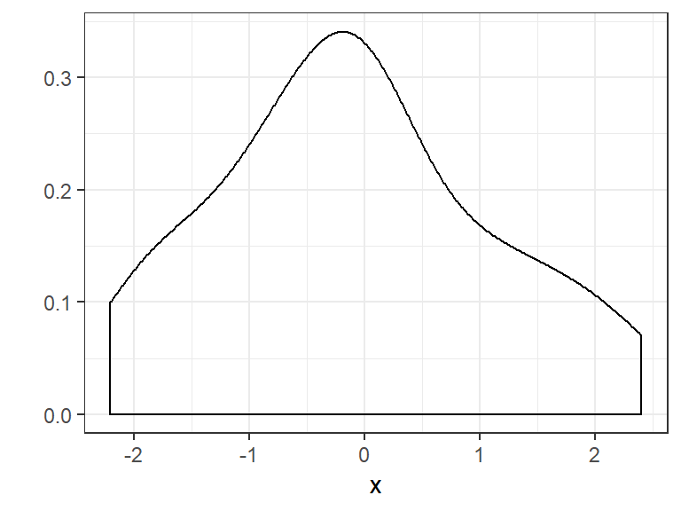

7. Darbas su duomenų sekomis
Skyriaus video medžiaga ir komentarai dėl užduočių („YouTube“ grojaraštis) .
Daugelyje situacijų duomenis galima užrašyti ir nagrinėti kaip reikšmių sekas, kurios padeda atsakyti į mums rūpimus duomenų analizės klausimus.
Žiūrint griežtai, programoje „R“ yra dviejų rūšių vektoriai: to paties duomenų tipo elementų sekos, vadinamos atominiais vektoriais, ir sąrašai, kurie gali būti sudaryti iš skirtingų tipų elementų. Mūsų kursas orientuotas į pradedančiųjų lygio duomenų analizę, todėl, paprastumo dėlei, vartodami terminą „vektorius“, turėsime omenyje to paties duomenų tipo elementų sekas.
Atominis vektorius yra ir pati mažiausia duomenų struktūra programoje: netgi viena reikšmė, tarkim 234, programoje „R“ yra laikoma vektoriumi, susidedančiu iš vieno elemento.
Tad šiame skyriuje panagrinėsime darbo su skaitinių, tekstinių ir kitokių duomenų tipų sekomis specifiką: kaip jas sukurti, apibendrinti, atvaizduoti grafiškai, perskaičiuoti ar transformuoti.
Tikslas – išmokti parengti analizei ir statistiškai apibendrinti duomenis, pateiktus kaip duomenų sekos.
Šio skyriaus uždavinius reikia atlikti iš eilės: dalis uždavinių yra tęstiniai.
Reikiami paketai: DescTools, tidyverse (dplyr, tibble, ggplot2, stringr ir kiti).
7.1 Specialiosios paskirties žodžiai
„R“ kalboje yra žodžių, kurie atlieka specialiosios paskirties reikšmių vaidmenį (žr. lentelėje 7.1). Programa „RStudio“ juos atpažįsta ir netgi nudažo kita spalva.
| Paaiškinimas | Žodis | Rezultatas „R“ komandų lange |
|---|---|---|
| Tuščias narys; tam tikrame kontekste reiškia „ištrinti“ | NULL | NULL |
| Trūkstama reikšmė (trumpinys nuo angl., NA – not available, t.p., missing value) | NA | NA |
| Negalima skaitinė reikšmė, skaitinė neapibrėžtis (angl., NaN – not a number) | NaN | NaN |
| (Teigiama) begalybė | Inf | Inf |
| Neigiama begalybė | -Inf | -Inf |
| Loginė reikšmė „netiesa“ | FALSE | FALSE |
| Loginė reikšmė „netiesa“ (sutrumpintai) | F | FALSE |
| Loginė reikšmė „tiesa“ | TRUE | TRUE |
| Loginė reikšmė „tiesa“ (sutrumpintai) | T | TRUE |
Pavyzdžiai, kaip gaunamos arba užrašomos šios reikšmės:
0/0 # neapibrėžtas skaičius (NaN - not a number)
## [1] NaNlog(0) # neapibrėžtumas: labai mažas skaičius
## [1] -Inf2 > 10 # „2 daugiau už 10“; atsakymas – loginė reikšmė „netiesa“
## [1] FALSEF # loginė reikšmė „netiesa“ (sutrumpintai)
## [1] FALSE6 != 7 # „6 nelygu 7“; atsakymas – loginė reikšmė „tiesa“
## [1] TRUET # loginė reikšmė „tiesa“ (sutrumpintai)
## [1] TRUENULL
## NULLUžduotis 7.1 Funkcijos, kurios prasideda žodžiu is, įprastai atlieka patikrinimą ir pateikia atsakymą TRUE arba FALSE. Pvz., is.na() tikrina, ar reikšmė yra trūkstama, is.nan() – ar tai negalima skaitinė reikšmė. Įvykdykite komandas is.na(NA), is.na(NaN), is.nan(NA), is.nan(NaN) ir padarykite išvadas:
- ar
NaNyra praleistos reikšmės tipas; - ar
NAyra negalimos skaitinės reikšmės tipas.
7.2 Bendrieji darbo su vektoriais principai
7.2.1 Vektoriaus kūrimas
„R“ vektorius statistikoje atitinka duomenų seką, dar vadinamą duomenų eilute. Kelios reikšmės į vektorių (t. y., į seką) sujungiamos naudojant komandą c() (c nuo žodžio combine arba concatenate). Reikšmės rašomos komandos skliausteliuose ir atskiriamos kableliais (,), pvz.:
c(6, 23, 33, 19)
## [1] 6 23 33 19Jei tuos pačius skaičius parašysime „R“ konsolėje be komandos c(), „R“ pamanys, kad tai atskiri niekaip nesusiję elementai, nesupras, ką su jais norime daryti, ir praneš, kad tai klaida (Error):
6, 23, 33, 19
## Error: <text>:1:2: unexpected ','
## 1: 6,
## ^Komanda c() į vektorių gali sujungti ne tik skaičius, bet ir kitokios rūšies duomenų reikšmes:
- tekstinius kintamuosius:
c("Man", "puikiai", "sekasi", ".")
## [1] "Man" "puikiai" "sekasi" "."- logines reikšmes (angliškai vadinamos „logical“ arba „boolean“):
c(TRUE, FALSE, FALSE, TRUE, TRUE)
## [1] TRUE FALSE FALSE TRUE TRUE- ir kitus.
Programoje „R“ kuriant vektorius, skirtingi skaičiai ar kitokio tipo reikšmės atskiriamos kableliu. O skaičių sveikoji ir dešimtoji dalys – tašku.
Vektorių galime išsaugoti „R“ atmintyje kaip objektą, naudodami priskyrimo operatorių.
vektorius <- c(11, 20, 33, 45)Tada jį atspausdinti neišreikštuoju būdu (angl. implicit printing) – tiesiog parašomas objekto pavadinimas:
vektorius
## [1] 11 20 33 45Jei visą kodo eilutę papildomai apskliaudžiame, rezultatas įprastai taip pat būna atspausdinamas:
(vektorius <- c(11, 20, 33, 45))
## [1] 11 20 33 45Arba išreikštai (angl. explicit printing) – naudojama funkcija print()):
print(vektorius)
## [1] 11 20 33 45Yra ir kitų būdų kurti vektorius. Jie įprastai yra specifiški tam tikram duomenų tipui. Juos aptarsime vėliau.
Užduotis 7.2
- Sukurkite vektorių iš pateiktų skaičių ir pavadinkite jį
seka_1: 1; 10; 100; 1000; 10000. - Vektorių atspausdinkite.
- Duoti kelių merginų ūgiai metrais. Pateikite juos kaip duomenų seką
merginu_ugiaiir atspausdinkite neišreikštuoju būdu.
| 1,67 | 1,56 | 1,66 | 1,59 |
| 1,77 | 1,71 | 1,69 | 1,66 |
| 1,68 | 1,55 | 1,70 | 1,72 |
Skirtingų tipų duomenys vienoje sekoje?
Kas atsitiks, jei į vieną seką bandysime sudėti kelių tipų duomenis? „R“ visus elementus pavers į tokį tipą, kuriuo gali būti reprezentuojamos visos reikšmės. Deja, įprastai rezultatas bus netikėtas (ir tikrai ne maloniąja prasme).
Atsargiai – į vieną seką sujungus skirtingus duomenų tipus rezultatas bus netikėtas!
Imkime loginę reikšmę TRUE. Šiame pavyzdyje visos reikšmės bus paverstos į skaičius (TRUE → 1):
c(TRUE, 1, 0, 1)
## [1] 1 1 0 1O šiame – į tekstą (TRUE → "TRUE"):
c(TRUE, 15, .30, "mama")
## [1] "TRUE" "15" "0.3" "mama"Dar keistesnių dalykų įvyksta dirbant su sudėtiniais duomenų tipais, pvz., faktoriais. Yra tam tikros taisyklės, ką ir kokiais atvejais „R“ padaro. Tačiau pradedantiesiems, nežinantiems šių taisyklių, skirtingų tipų duomenų jungimo į vektorių rekomenduoju vengti.
class(), patikrinkite, kokiam duomenų tipui („R“ klasei) priklauso sekos c(TRUE, 1, 0, 1) bei c(TRUE, 15, .30, "mama").7.2.2 Vektoriaus savybių tikrinimas
Aptarsime tik kelias funkcijas, skirtas vektoriaus savybių tikrinimui:
length()– elementų skaičius;class()– „R“ klasė;str()irtibble::glimpse()– struktūra;attributes()– atributai.
Funkcija length() pateikia vektoriaus ilgį, t. y., suskaičiuoja, iš kelių elementų sudarytas vektorius. Ji bus naudinga, kai turėdami į vektorių surašytas reikšmes norėsime apskaičiuoti imties dydį, įprastai žymimą raide „n“:
vektorius_2 <- c(11, NA, 33, 45)n <- length(vektorius_2) # Apskaičiuojame ir priskiriame
n # Atspausdiname
## [1] 4Atkreipkite dėmesį į tai, kad skaičiuojamos ir trūkstamos reikšmės.
Bet kokio „R“ objekto, taip pat ir vektoriaus, klasę parodo funkcija class():
class(vektorius_2)
## [1] "numeric"Mums reiktų žinoti svarbiausius duomenų tipus atitinkančias klases:
- numeric;
- integer;
- character;
- factor;
- ordered;
- logical.
Apie statistikoje naudojamus duomenų tipus rašoma skyriuje „2.5 Kintamųjų tipai statistikoje“. Apie programoje „R“ naudojamus – skyriuje „4.4 Svarbiausi R duomenų tipai“.
Vektoriaus struktūrą galime peržiūrėti naudodami funkciją str():
str(vektorius_2)
## num [1:4] 11 NA 33 45Arba glimpse() iš paketo tibble() (apie šią funkciją plačiau bus rašoma temoje apie duomenų lenteles):
tibble::glimpse(vektorius_2)
## num [1:4] 11 NA 33 45Vektoriams ši funkcija pateikia sutrumpintą „R“ duomenų tipo („R“ klasės) pavadinimą, vektoriaus ilgį (elementų skaičių) ir kelias pirmąsias reikšmes. Pavyzdyje tai:
num– numeric – skaitinis duomenų tipas;[1:4]– 4 elementai (nuo 1 iki 4);- toliau –
11 NA 33ir t.t. – kelios pirmosios reikšmės.
Vektoriaus savybes, vadinamas atributais, galima peržiūrėti naudojant funkciją attributes(). Atsakymas NULL rodo, kad objektas atributų neturi:
attributes(vektorius_2)
## NULLKategoriniai kintamieji turi atributą, pavadinimu levels – kategorijų pavadinimus.
Užduotis 7.4
- Apskaičiuokite anksčiau sukurto vektoriaus
seka_1ilgį. - Programoje „R“ yra apibrėžtas kintamasis
letters, kuriame surašytos mažosios angliškos abėcėlės raidės.- Konsolėje atspausdinkite šį kintamąjį, parašydami
letters; - Naudodami komandas
length()irstr()ištirkite:- kiek raidžių yra angliškoje abėcėlėje?
- koks kintamojo tipas – skaitinis (
num) ar kitoks?
- Konsolėje atspausdinkite šį kintamąjį, parašydami
- Ištirtos 5 gėlės ir duomenys apie jas pateikti po šio uždavinio sąlyga duomenų sekų pavidalu. Kiekvieną iš gėlės savybių (
lapu_ilgisir kt.) ištirkite naudodami funkcijasclass(),str()irattributes()(įvertinkite kiek ir kokių atributų yra).
# Duomenys apie gėles
lapu_ilgis <- c(1.3, NA, 2.2, 1.1, 1.6)
lapu_skaicius <- c(24L, 22L, 28L, 25L, 25L)
ziedu_spalva <- factor(c("raudona", "geltona", "geltona", "balta", "balta"))
kvapo_stiprumas <- ordered(c("silpnas", "vidutinis", "stiprus", "stiprus", NA))
ar_augo_lauke <- c(FALSE, TRUE, TRUE, FALSE, TRUE)
komentaras <- c("-", "-", "tirta ryte", "-", "-")7.2.3 Vektoriaus elementų pasirinkimas
Ši potemė yra susijusi su skyriumi „Elementų eilės numerių žymėjimas: [ ]“, nes norėdami pasirinkti tam tikrus vektoriaus elementus (sukurti elementų poaibį, angl. subset), galime naudoti viengubų laužtinių skliaustų operatorių []. Skliaustuose nurodomas teigiamas arba neigiamas skaitinis elemento indeksas (eilės numeris), loginis indeksas arba pavadinimas (jei elementas jį turi).
Pasirinkimas pagal elemento pavadinimą
Iliustracijai naudokime vektorių merginu_ugiai:
merginu_ugiai
## [1] 1.67 1.56 1.66 1.59 1.77 1.71 1.69 1.66 1.68 1.55 1.70 1.72Jei elementai turi pavadinimus, juos galime pasirinkti kabutėse nurodydami šiuos pavadinimus.
Naudojant [], elementų pavadinimus reikia pateikti kabutėse.
Sakykime, turime seką su merginų vardais. Naudodamiesi jais, suteikiame reikšmėms pavadinimus. O prieš tai nusistatykime lietuviškąją lokalę, kad galėtume naudoti lietuviškas raides:
Sys.setlocale(locale = "Lithuanian") # Lietuviška lokalė Windows sistemaivardai <- c("Inga", "Greta", "Jonė", "Justė", "Raimonda", "Laura", "Žaneta",
"Ingrida", "Kristina", "Toma", "Rima", "Sandra")
names(merginu_ugiai) <- vardai # Suteikiami pavadinimai
merginu_ugiai
## Inga Greta Jonė Justė Raimonda Laura Žaneta Ingrida
## 1.67 1.56 1.66 1.59 1.77 1.71 1.69 1.66
## Kristina Toma Rima Sandra
## 1.68 1.55 1.70 1.72Vienoje eilutėje pateiktas elemento pavadinimas (šiuo atveju, merginos vardas), kitoje – elemento reikšmė (šiuo atveju, ūgis).
Dabar ūgius galime sužinoti pagal vardus:
merginu_ugiai["Jonė"]
## Jonė
## 1.66merginu_ugiai[c("Jonė", "Laura", "Toma")]
## Jonė Laura Toma
## 1.66 1.71 1.55Užduotis 7.5
- Programoje „R“ yra pavyzdiniai duomenys
state.nameirstate.area. Pirmajame vektoriuje – JAV valstijų pavadinimai, antrajame – tų valstijų užimamas plotas kvadratinėmis myliomis. Parašykite kodą, kuris atsakytų į klausimus:- Atspausdinkite
state.areairstate.namereikšmes. - Kelių valstijų duomenys pateikti?
- Pagal pavyzdį, valstijų plotams suteikite pavadinimus.
- Tada sudarykite vektorių, kuriame būtų tik šių 4 valstijų plotai: Arizona, New Jersey, Texas, Utah.
- Atspausdinkite
Teigiami skaitiniai indeksai
Norėdami pasirinkti elementą, nurodome teigiamą jo indeksą.
Programoje „R“ elementų numeravimas (indeksavimas) prasideda nuo 1.
Tarkime, mus domina antrasis elementas:
merginu_ugiai[2]
## Greta
## 1.56Pasirinkime antrą ir ketvirtą (atkreipkite dėmesį į tai, kad nurodant indeksus bus panaudota funkcija c()):
merginu_ugiai[c(2, 4)]
## Greta Justė
## 1.56 1.59Dar keli pavyzdžiai:
(skaiciu_seka <- 1:10)
## [1] 1 2 3 4 5 6 7 8 9 10
skaiciu_seka[2]
## [1] 2
skaiciu_seka[c(2, 4)]
## [1] 2 4Užduotis 7.6
- Naudodami kintamąjį
lettersatlikite užduotis (parašykite programos kodą):- Nurodykite, kokia 16-toji abėcėlės raidė;
- Nurodykite, kokios yra 6, 11, 18 ir 20 abėcėlės raidės.
Neigiami skaitiniai indeksai
Neigiami skaitiniai indeksai panaikina nurodytuosius elementus. Prieš indeksą padedamas „minus“ (-) ženklas:
merginu_ugiai[-2]
## Inga Jonė Justė Raimonda Laura Žaneta Ingrida Kristina
## 1.67 1.66 1.59 1.77 1.71 1.69 1.66 1.68
## Toma Rima Sandra
## 1.55 1.70 1.72merginu_ugiai[-c(2, 4, 9, 10, 11)]
## Inga Jonė Raimonda Laura Žaneta Ingrida Sandra
## 1.67 1.66 1.77 1.71 1.69 1.66 1.72Norėdami panaikinti paskutinį elementą, galime naudoti tokį kodą:
n <- length(merginu_ugiai)
merginu_ugiai[-n]
## Inga Greta Jonė Justė Raimonda Laura Žaneta Ingrida
## 1.67 1.56 1.66 1.59 1.77 1.71 1.69 1.66
## Kristina Toma Rima
## 1.68 1.55 1.70Čia n yra elementų skaičius, atitinkantis paskutinio elemento eilės numerį: 12.
Dar keli pavyzdžiai:
skaiciu_seka
## [1] 1 2 3 4 5 6 7 8 9 10
skaiciu_seka[-2]
## [1] 1 3 4 5 6 7 8 9 10
skaiciu_seka[-c(2, 4, 9, 10)]
## [1] 1 3 5 6 7 8
n2 <- length(skaiciu_seka)
skaiciu_seka[-n2]
## [1] 1 2 3 4 5 6 7 8 9Užduotis 7.7
- Naudodami kintamąjį
lettersatlikite užduotis (parašykite programos kodą):- Pašalinkite 16-tąją abėcėlės raidę;
- Pašalinkite 6, 11, 18 ir 20 abėcėlės raides.
Pasirinkimas pagal sąlygas (loginį indeksą)
Kuriant poaibius pagal loginį indeksą pasirenkami tik tie elementai, kuriems loginis indeksas yra TRUE (pav. 7.1). Nagrinėjant šią temą naudinga žinoti, kaip atliekamos pagrindinės palyginimo operacijos (žr. skyriuje „7.6.1 Palyginimo operacijos“).
Pav. 7.1: Loginiai indeksai poaibiams kurti: pasirenkami tik tie elementai, kuriems indeksas yra TRUE. Iliustracijos šaltinis: .
Sakykime, mus domina tų gėlių, kurios augo lauke, lapų skaičius.
ar_augo_lauke
## [1] FALSE TRUE TRUE FALSE TRUE
lapu_skaicius
## [1] 24 22 28 25 25Tada naudojame tokį užrašą:
lapu_skaicius[ar_augo_lauke]
## [1] 22 28 25Be to, abu vektoriai turi būti vienodo ilgio:
length(ar_augo_lauke) == length(lapu_skaicius) # palyginimui naudojame ==, o ne =
## [1] TRUEDabar sakykime, kad mus domina geltonų gėlių lapų skaičius.
ziedu_spalva
## [1] raudona geltona geltona balta balta
## Levels: balta geltona raudonaAtlikę palyginimo operaciją, sužinome, kurios gėlės yra geltonos:
ziedu_spalva == "geltona" # TRUE, jei geltona
## [1] FALSE TRUE TRUE FALSE FALSEPalyginimo rezultatą galime išsaugoti kaip objektą, ir jį naudoti reikiamų elementų pasirinkimui net kelis kartus:
ar_geltona <- ziedu_spalva == "geltona"
lapu_skaicius[ar_geltona]
## [1] 22 28
lapu_ilgis[ar_geltona]
## [1] NA 2.2Arba palyginimo operaciją galime įrašyti tiesiai tarp laužtinių skliaustų:
lapu_skaicius[ziedu_spalva == "geltona"] # palyginimui naudojame ==, o ne =
## [1] 22 28Dar keli pavyzdžiai:
skaiciu_seka[skaiciu_seka < 5]
## [1] 1 2 3 4
skaiciu_seka[skaiciu_seka == 5]
## [1] 5
is.na(skaiciu_seka) # Tikrinimas kiekvienam elementui atskirai
## [1] FALSE FALSE FALSE FALSE FALSE FALSE FALSE FALSE FALSE FALSE
!is.na(skaiciu_seka)
## [1] TRUE TRUE TRUE TRUE TRUE TRUE TRUE TRUE TRUE TRUEUžduotis 7.8
- Naudokite uždavinio 7.4 duomenis apie gėles.
- Parodykite, kiek lapų (
lapu_skaicius) turėjo gėlės, kurių kvapas buvo stiprus (kvapo_stiprumas). Nenustebkite, jei atsakyme atsiras reikšmėNA. - Funkcija
!is.na()tikrina, kurios reikšmės yra netrūkstamos (!reiškia NE). Naudodami šią funkciją pasirinkite tik tas gėlių spalvas (ziedu_spalva), jei toms gėlėms yra žinomas lapų ilgis (lapu_ilgis).
- Parodykite, kiek lapų (
- Naudodami duomenis
state.nameirstate.areaparašykite kodą, kuris atsakytų į klausimus:- Išvardinkite valstijas, kurių plotas mažesnis už 10000 kvadratinių mylių (pavadinkime jas „mažomis valstijomis“?
- Koks mažų valstijų skaičius?
Kai kurie atsakymai pasitikrinimui (jums reikia pateikti sprendimus):
## [1] 28 25 NA## [1] raudona geltona balta balta
## Levels: balta geltona raudona## [1] "Connecticut" "Delaware" "Hawaii" "Massachusetts"
## [5] "New Hampshire" "New Jersey" "Rhode Island" "Vermont"Specializuotos funkcijos elementams pasirinkti
Norėdami pasirinkti kelis pirmuosius elementus, galime naudoti funkciją head(), kurios argumentas n nurodo, kiek pirmųjų elementų pasirinkti:
head(merginu_ugiai, n = 2) # palieka pirmus 2 elementus
## Inga Greta
## 1.67 1.56Jei reikia pašalinti kelis paskutinius elementus (ir rodyti pirmuosius), naudojame neigiamą indeksą:
head(merginu_ugiai, n = -8) # pašalina 8 paskutinius elementus
## Inga Greta Jonė Justė
## 1.67 1.56 1.66 1.59Analogiškai funkcija tail() parodo paskutiniuosius elementus:
tail(merginu_ugiai, n = 3) # palieka 3 paskutinius elementus
## Toma Rima Sandra
## 1.55 1.70 1.72Arba pašalina pirmuosius (kad būtų rodomi tik paskutiniai):
tail(merginu_ugiai, n = -7) # pašalina 7 pirmuosius elementus
## Ingrida Kristina Toma Rima Sandra
## 1.66 1.68 1.55 1.70 1.72Jei pasirinktus elementus norėsime naudoti toliau, juos priskiriame naujam objektui, pvz.:
ugiai2 <- head(merginu_ugiai, n = 5)
ugiai2_be_vardu <- unname(ugiai2) # pašalina pavadinimus
ugiai2_be_vardu
## [1] 1.67 1.56 1.66 1.59 1.77Funkcijos head() ir tail() bus naudingos dirbant su duomenų lentelėmis: jos parodys pirmąsias ir paskutines lentelės eilutes.
Dar keli pavyzdžiai:
skaiciu_seka
## [1] 1 2 3 4 5 6 7 8 9 10
head(skaiciu_seka, n = 2)
## [1] 1 2
head(skaiciu_seka, n = -2)
## [1] 1 2 3 4 5 6 7 8
tail(skaiciu_seka, n = 2)
## [1] 9 10
tail(skaiciu_seka, n = -2)
## [1] 3 4 5 6 7 8 9 10Užduotis 7.9
- Naudodami kintamąjį
lettersatlikite užduotis (parašykite programos kodą):- Atspausdinkite 10 paskutiniųjų angliškos abėcėlės raidžių;
- Pašalinkite 10 paskutiniųjų angliškos abėcėlės raidžių;
- Atspausdinkite visas raides, išskyrus pirmą ir paskutinę.
7.2.4 Vektoriaus elementų reikšmių pakeitimas
Vektoriaus reikšmėms pakeisti naudojama operatorių [] ir <- kombinacija. Pasidarykime objekto kopiją, su kuria dirbsime:
ugiai3 <- ugiai2Galima keisti vieną ar kelias reikšmes naudojant indeksą (eilės numerį):
ugiai3[1] <- 1.90
ugiai3
## Inga Greta Jonė Justė Raimonda
## 1.90 1.56 1.66 1.59 1.77ugiai3[c(1, 3)] <- c(2.00, 2.10)
ugiai3
## Inga Greta Jonė Justė Raimonda
## 2.00 1.56 2.10 1.59 1.77Keitimas pagal loginę sąlygą:
ugiai3[ugiai3 < 1.60] <- NA
ugiai3
## Inga Greta Jonė Justė Raimonda
## 2.00 NA 2.10 NA 1.77Keitimas pagal pavadinimą:
ugiai3["Raimonda"] <- 1.00
ugiai3
## Inga Greta Jonė Justė Raimonda
## 2.0 NA 2.1 NA 1.0Užduotis 7.10
- Sudarykite „R“ vektorių, tada visas neigiamas reikšmes duomenų sekoje pakeiskite nuliais:
- -0.54 0.45 -1.07 0.75 0.88 -0.99 1.24 0.73 0.13 -0.10
7.2.5 Vektorizuotos operacijos
Daugelis operacijų programoje „R“ yra vektorizuotos. T. y., parašius funkciją ar komandą, perskaičiavimas atliekamas kiekvienam elementui atskirai papildomai nerašant sudėtingesnio programos kodo, tokio kaip ciklas (angl., loop). Tai didelis privalumas, supaprastinantis darbą šia programa.
Aritmetiniai (pvz., +, -), palyginimo (pvz., <, >) operatoriai veikia vektorizuotai. Iliustracijai imkime praeituose skyreliuose sukurtus objektus vektorius ir vektorius_2.
vektorius
## [1] 11 20 33 45
vektorius_2
## [1] 11 NA 33 45Prie kiekvieno vektoriaus elemento pridėkime po 100:
vektorius + 100 # atitinka c(11 + 100, 20 + 100, 33 + 100, 45 + 100)
## [1] 111 120 133 145Palyginkime, ar reikšmės mažesnės už 21:
vektorius < 21 # atitinka c(11 < 21, 20 < 21, 33 < 21, 45 < 21)
## [1] TRUE TRUE FALSE FALSESudėkime kelių vienodo ilgio vektorių pirmuosius, antruosius, trečiuosius ir t.t. elementus:
vektorius + vektorius_2 # atitinka c(11 + 11, 20 + NA, 33 + 33, 45 + 45)
## [1] 22 NA 66 90Jei dirbame su keliais vektoriais ir vienas iš jų yra trumpesnis, trumpesniojo reikšmės cikliškai naudojamos iš naujo:
vektorius + c(0, 10000) # atitinka c(11 + 0, 20 + 10000, 33 + 0, 45 + 10000)
## [1] 11 10020 33 10045Toks elgesys dažnai yra nepageidautinas, tad būkite atidūs. Laimei, kai kurios funkcijos, kurias naudosime dirbdami su duomenų lentelėmis kitų užsiėmimų metu, apskritai stabdo skaičiavimus, jei keli vektoriai yra skirtingo ilgio, ir taip apsaugo nuo netikėtų rezultatų.
Kai kurios funkcijos taip pat atlieka veiksmus su kiekvienu elementu atskirai, pvz., logaritmuoja:
log(vektorius) # atitinka c(log(11), log(20), log(33), log(45))
## [1] 2.397895 2.995732 3.496508 3.806662Arba tikrina, kurios reikšmės yra trūkstamos (žymimos simboliu NA):
is.na(vektorius_2)
## [1] FALSE TRUE FALSE FALSEJei galite rinktis tarp vektorizuotos ir nevektorizuotos (pvz., savo pačių parašytos) funkcijos, žinokite, kad didelė tikimybė, jog pirmoji veiks efektyviau, nes yra kruopščiai parašyta, išbandyta ir optimizuota.
Užduotis 7.11 Uždaviniuose 7.2 ir 7.3 buvo sukurti keli vektoriai, kuriuos dabar ir panaudosime.
- Vektorius
merginu_ugiai:- Apskaičiuokite, kiek merginų dalyvavo apklausoje.
- Pasirodo, visos merginos buvo apsiavusios aukštakulniais, ūgį padidinančiais 4 cm. Perskaičiuokite, koks tikrasis kiekvienos merginos ūgis. Rezultatą priskirkite kintamajam
tikrieji_merginu_ugiai.
- Programoje „R“ dešimtainį logaritmą skaičiuoja funkcija
log10(), pvz.,log10(16). Šio tipo logaritmavimą atlikite kiekvienam vektoriausseka_1elementui.
7.3 Darbas su tekstiniais kintamaisiais
Tekstiniai kintamieji – tai ne statistinis duomenų tipas. Jis reikalingas, pvz., užrašyti grafikų pavadinimus. Programoje „R“ tekstinius duomenis atitinka klasė „character“ (sutrumpintai chr). Darbui su tekstiniais kintamaisiais galime naudoti bazines arba paketo stringr funkcijas.
Darbui su tekstiniais kintamaisiais skirtas specializuotas paketas stringr .
Visos svarbiausios paketo stringr funkcijos prasideda str_, todėl paprasta prisiminti. str yra trumpinys nuo kompiuterinio termino „string“ – teksto eilutė.
Duomenyse bus lietuviškų simbolių, todėl įsijunkime lietuviškąją lokalę.
Sys.setlocale(locale = "Lithuanian") # Lietuviška lokalė Windows sistemaiTekstinės reikšmės sudaromos naudojant funkciją c() ir kabutes. Skirtingos reikšmės atskiriamos kableliais.
miestai <- c("Vilnius", "Kaunas", "Klaipėda")
miestai
## [1] "Vilnius" "Kaunas" "Klaipėda"Naudodami is.character() patikriname, ar vektorius yra tekstinis, o as.character() vektorių paverčia į tekstinį:
is.character(miestai)
## [1] TRUEskaiciai <- 1:5
skaiciai
## [1] 1 2 3 4 5
is.character(skaiciai)
## [1] FALSEskaiciai_chr <- as.character(skaiciai)
skaiciai_chr
## [1] "1" "2" "3" "4" "5"
is.character(skaiciai_chr)
## [1] TRUEŽodžiu is prasidedančios funkcijos tikrina, o žodžiu as – keičia duomenų tipą ar kitą savybę.
Galime palyginti, ar kelios reikšmės yra vienodos:
"A" == "B"
## [1] FALSE"A" == "a"
## [1] FALSETaip pat ar reikšmė priklauso pogrupiui:
"Vilnius" %in% miestai
## [1] TRUE"A" %in% miestai
## [1] FALSEFunkcijos paste() ir paste0() sujungia kelias reikšmes į vieną.
paste("A", "B", "C")
## [1] "A B C"paste0("A", "B", "C")
## [1] "ABC"Gali būti pasirenkamas norimas skirtumas nurodant sep:
paste("A", "B", "C", sep = ", ")
## [1] "A, B, C"Funkcija paste0() atitinka paste(sep = ""). Veikia vektorizuotai:
vardas <- c("Jonas", "Ona", "Gytis")
kreipinys <- c("ponas", "panelė", "ponaitis")
vardas_ir_kreipinys <- paste(kreipinys, vardas)
vardas_ir_kreipinys
## [1] "ponas Jonas" "panelė Ona" "ponaitis Gytis"Jei visas reikšmes norime sujungti į vieną eilutę, papildomai naudojama collapse ir nurodome skirtuką:
paste(kreipinys, vardas, collapse = ", ")
## [1] "ponas Jonas, panelė Ona, ponaitis Gytis"Kaip alternatyva funkcijai paste(), gali būti naudojama stringr::str_c() (reikalingas paketas stringr). Įprastai str_c() duoda labiau prognozuojamus rezultatus, kai tekstinių reikšmių vektoriuje yra praleistų reikšmių (NA).
stringr::str_c(kreipinys, vardas)
## [1] "ponasJonas" "panelėOna" "ponaitisGytis"
stringr::str_c(kreipinys, vardas, sep = " ")
## [1] "ponas Jonas" "panelė Ona" "ponaitis Gytis"
stringr::str_c(kreipinys, vardas, collapse = ", ")
## [1] "ponasJonas, panelėOna, ponaitisGytis"
stringr::str_c(kreipinys, vardas, sep = " ", collapse = ", ")
## [1] "ponas Jonas, panelė Ona, ponaitis Gytis"Kiekvienos tekstinės reikšmės simbolių skaičių pasako nchar() arba stringr::str_length():
nchar(vardas_ir_kreipinys)
## [1] 11 10 14stringr::str_length(vardas_ir_kreipinys)
## [1] 11 10 14Naudojant stringr::str_sort() tekstines reikšmes galima išdėlioti eilės tvarka:
- Nurodant
localeir dviženklį kalbos kodą (pvz.,"lt") galima išdėlioti abėcėlės tvarka. - Nurodant
numeric = TRUE– kaip skaičius.
raidės <- c("Z", "J", "Y", "K")stringr::str_sort(raidės, locale = "lt")
## [1] "Y" "J" "K" "Z"
stringr::str_sort(raidės, locale = "en")
## [1] "J" "K" "Y" "Z"skaiciai_chr_2 <- c("20", "5", "10", "150", "12", "1")
stringr::str_sort(skaiciai_chr_2)
## [1] "1" "10" "12" "150" "20" "5"
stringr::str_sort(skaiciai_chr_2, numeric = TRUE)
## [1] "1" "5" "10" "12" "20" "150"Funkcija stringr::str_order() parodo išdėliojimo eilės tvarką (naudojama analogiškai kaip str_sort()):
stringr::str_order(raidės, locale = "en")
## [1] 2 4 3 1Funkcija dplyr::recode() perkoduoja reikšmes pagal šabloną senoji_reikšmė = naujoji_reikšmė:
dplyr::recode(kreipinys, "ponas" = "Mr.", "panelė" = "Miss.")
## [1] "Mr." "Miss." "ponaitis"Taip pat gali būti naudingos funkcijos:
stringr::str_to_lower(vardas_ir_kreipinys) # visos mažosios
## [1] "ponas jonas" "panelė ona" "ponaitis gytis"
stringr::str_to_upper(vardas_ir_kreipinys) # visos didžiosios
## [1] "PONAS JONAS" "PANELĖ ONA" "PONAITIS GYTIS"
stringr::str_to_title(vardas_ir_kreipinys) # pirma didžioji
## [1] "Ponas Jonas" "Panelė Ona" "Ponaitis Gytis"
make.names(vardas_ir_kreipinys) # paverčia į leistinus „R“ objektų pavadinimus
## [1] "ponas.Jonas" "panelė.Ona" "ponaitis.Gytis"Kitus duomenų tipus galime paversti į tekstą naudodami as.character(), norimu pavidalu suformatuodami skaičius (žr. „7.5.5 Skaičių formatavimas“) ar kitaip sudarydami teksto eilutes. Įprastai į tekstą paverstus duomenis galima tvarkingiau pateikti lentelėse bei ataskaitose, nei, pvz., suapvalintus, bet nesuformatuotus skaičius.
Visgi tekstiniams kintamiesiems statistinė analizė neatliekama. Prieš tai jie turi būti paversti į kategorinius. Kai kurios funkcijos tekstą automatiškai atpažįsta kaip faktorius (tik kategorijas gali išrikiuoti nelogiška tvarka). Kitais atvejais pakeitimą privalu atlikti „rankiniu būdu“ naudojant as.factor() ar analogiškas funkcijas (žr., „7.4.1 Faktorių kūrimas“).
Praktinis patarimas: dirbdami prisiminkite, kad jei norite pakeisti/atnaujinti objekto reikšmes, reikia naudoti <- arba =:
raidės
## [1] "Z" "J" "Y" "K"
(raidės <- stringr::str_sort(raidės, locale = "lt"))
## [1] "Y" "J" "K" "Z"
(raidės <- dplyr::recode(raidės, "Y" = "i", "K" = "25"))
## [1] "i" "J" "25" "Z"
raidės <- stringr::str_c(raidės, collapse = " + ")
raidės
## [1] "i + J + 25 + Z"Užduotis 7.12 Duota seka vardai_2 <- c("G", "J", "G", "A", "Y", "G"). Tai pirmosios vardų „Gytis“, „Jonas“ ir „Aistis“ raidės. Atlikite užduotis: atsakymai, kurių tikimasi, pateikti žemiau.
- Išrikiuokite raides pagal lietuvių kalbos abėcėlę.
- Pašalinkite raidę „Y“.
- Perkoduokite į vardus.
- Suskaičiuokite, kokio ilgio kiekvienas vardas.
- Prieš kiekvieną vardą pridėkite „p. “.
- Kiekvieną pirmąją raidę paverskite į didžiąją.
- Visus vardus (su prierašu „p. “) atskyrę kableliais sujunkite į vieną eilutę.
- Suskaičiuokite, kokio ilgio galutinė eilutė.
Atsakymai pasitikrinimui:
## [1] "A" "G" "G" "G" "Y" "J"
## [1] "A" "G" "G" "G" "J"
## [1] "Aistis" "Gytis" "Gytis" "Gytis" "Jonas"
## [1] 6 5 5 5 5
## [1] "p. Aistis" "p. Gytis" "p. Gytis" "p. Gytis" "p. Jonas"
## [1] "P. Aistis" "P. Gytis" "P. Gytis" "P. Gytis" "P. Jonas"
## [1] "P. Aistis, P. Gytis, P. Gytis, P. Gytis, P. Jonas"
## [1] 497.4 Darbas su kategoriniais kintamaisiais
Kategoriniai kintamieji (faktoriai) – tai iš anksto žinomą galimų skirtingų reikšmių (kategorijų) skaičių turintys kintamieji. Sutrumpintai žymimi fct.
Darbui su faktoriais yra sukurtas specializuotas paketas forcats . Svarbiausios jo funkcijos prasideda užrašu fct_.
7.4.1 Faktorių kūrimas
Faktoriai sukuriami naudojant funkciją factor().
fct_1 <- factor(c("A", "A", "D", "C", "C", "D"))
fct_2 <- factor(c("A", "T", "T", "T", "C", "T"))
miestai <- c("Vilnius", "Vilnius", "Kaunas", "Vilnius", "Klaipėda", "Kaunas", "Alytus")
(miestai_fct <- factor(miestai))
## [1] Vilnius Vilnius Kaunas Vilnius Klaipėda Kaunas Alytus
## Levels: Alytus Kaunas Klaipėda VilniusTaip pat kategorinius kintamuosius galime gauti keisdami duomenų klasę funkcijomis as.factor() (kategorijas išrikiuoja abėcėliškai), forcats::as_factor() (kategorijas išrikiuoja pagal jų eilės tvarką vektoriuje), factor() (kategorijas galime nurodyti patys naudodami levels = c(…)) ir panašias funkcijas.
miestai <- c("Vilnius", "Vilnius", "Kaunas", "Vilnius", "Klaipėda", "Kaunas", "Alytus")
# Kategorijos išdėliojamos pagal abėcėlę.
# Rezultatas skirsis priklausomai nuo nustatytos „R“ lokalės.
as.factor(miestai)
## [1] Vilnius Vilnius Kaunas Vilnius Klaipėda Kaunas Alytus
## Levels: Alytus Kaunas Klaipėda Vilnius# Kategorijos išdėliojamos pagal eilės tvarką vektoriuje.
# Pirma sutinkamas „Vilnius“, po to „Kaunas“ ir t.t.
forcats::as_factor(miestai)
## [1] Vilnius Vilnius Kaunas Vilnius Klaipėda Kaunas Alytus
## Levels: Vilnius Kaunas Klaipėda Alytus# Kategorijos išdėliojamos nurodyta eilės tvarka.
factor(miestai, levels = c("Kaunas", "Alytus", "Vilnius", "Klaipėda"))
## [1] Vilnius Vilnius Kaunas Vilnius Klaipėda Kaunas Alytus
## Levels: Kaunas Alytus Vilnius KlaipėdaNorint duomenis paversti į ranginius, naudojamos funkcijos ordered(), as.ordered() arba factor(..., ordered = TRUE):
vietos <- c("pirma", "antra", "trečia")
as.ordered(vietos) # kategorijos išdėliotos neteisingai
## [1] pirma antra trečia
## Levels: antra < pirma < trečia
ordered(vietos, levels = c("pirma", "antra", "trečia"))
## [1] pirma antra trečia
## Levels: pirma < antra < trečia
factor(vietos, levels = c("pirma", "antra", "trečia"), ordered = TRUE)
## [1] pirma antra trečia
## Levels: pirma < antra < trečiaRanginius duomenis versti į nominaliuosius naudojama funkcija factor(..., ordered = FALSE).
Turint tekstinius kintamuosius, funkcija type.convert() tinkamą duomenų tipą bando atspėti automatiškai, tad ji taip pat gali duomenis paversti į nominaliuosius faktorius (kategorijos nebūtinai bus išrikiuotos logiška tvarka).
type.convert(miestai) # Automatinis kintamojo tipo parinkimas → factor
## [1] Vilnius Vilnius Kaunas Vilnius Klaipėda Kaunas Alytus
## Levels: Alytus Kaunas Klaipėda Vilniustype.convert(skaiciai_chr_2) # Automatinis kintamojo tipo parinkimas → numeric
## [1] 20 5 10 150 12 1Įvykdę automatinį duomenų tipo parinkimą būtinai patikrinkite, ar rezultatas yra toks, kokio tikėjotės.
Naudodami funkciją cut() į kategorijas galime padalinti skaitinių kintamųjų reikšmes (apie tai bus rašoma skyriuje „7.5.4 Skaitinio kintamojo reikšmių kategorizavimas“).
Užduotis 7.13
- Duota duomenų eilutė
budejimo_dienos <- c("Pirmadienis", "Antradienis", "Ketvirtadienis", "Sekmadienis"). Paverskite ją į faktorių. Kategorijos turi būti išrikiuotos logiška tvarka.
7.4.2 Faktorių pertvarkymas ir analizė
Toliau šio skyriaus pavyzdžiuose bus naudojami duomenys apie kates. Duomenų įkėlimo kodo suprasti nebūtina. Duomenų aprašymas: help(cats, package = "MASS").
lytis <- dplyr::recode_factor(MASS::cats$Sex, "M" = "Patinas", "F" = "Patelė")
kunas <- cut(MASS::cats$Bwt, breaks = 3,
labels = c("Smulkus", "Vidutinis", "Didelis"), ordered_result = TRUE)
sirdis <- cut(MASS::cats$Hwt, breaks = 2, labels = c("Lengva", "Sunki"), ordered_result = TRUE)head(lytis)
## [1] Patelė Patelė Patelė Patelė Patelė Patelė
## Levels: Patinas Patelė
head(kunas)
## [1] Smulkus Smulkus Smulkus Smulkus Smulkus Smulkus
## Levels: Smulkus < Vidutinis < Didelis
head(sirdis)
## [1] Lengva Lengva Lengva Lengva Lengva Lengva
## Levels: Lengva < SunkiNorint patikrinti ar kintamasis yra kategorinis, naudojama funkcija is.factor(), o is.ordered() tikrina, ar kategorijos turi eilės tvarką (t. y., ar kintamasis yra ranginis).
Funkcija levels() išvardija kategorijas:
levels(lytis)
## [1] "Patinas" "Patelė"
levels(miestai_fct)
## [1] "Alytus" "Kaunas" "Klaipėda" "Vilnius"Funkcija summary() automatinę suvestinę atlieka pagal kintamojo tipą („R“ klasę). Kategoriniams kintamiesiems sudaro dažnių lentelę.
summary(lytis)
## Patinas Patelė
## 97 47
summary(miestai_fct)
## Alytus Kaunas Klaipėda Vilnius
## 1 2 1 3Dažnių lentelėms sudaryti naudojama funkcija table() arba ftable().
table(lytis)
## lytis
## Patinas Patelė
## 97 47
table(miestai_fct)
## miestai_fct
## Alytus Kaunas Klaipėda Vilnius
## 1 2 1 3„R“ rezultatuose:
miestai_fct– kintamojo pavadinimas (gali ir nebūti);Alytus Kaunas ...– reikšmių (grupių) pavadinimai;1 2 1 3– reikšmių pasikartojimo dažnis (grupių dydžiai).
Funkciją table() galima naudoti ne tik faktoriams, bet ir kitų tipų kintamiesiems, kai norima sudaryti dažnių lentelę. Taip pat galima sudaryti kryžmines (kelių kintamųjų) dažnių lenteles, kurios rodo, kiek kartų pasikartoja kiekviena kelių kintamųjų reikšmių kombinacija.
dazn_lentele <- table(lytis, kunas)
dazn_lentele
## kunas
## lytis Smulkus Vidutinis Didelis
## Patinas 31 42 24
## Patelė 39 8 0„R“ rezultatuose matome, kad, pvz., kombinacija „Patinas“ ir „Smulkus“ pasikartoja 31 kartą, o „Patelė“ ir „Didelis“ – apskritai nepasitaikė.
Funkcija addmargins() prideda eilučių ir stulpelių sumas
addmargins(dazn_lentele)
## kunas
## lytis Smulkus Vidutinis Didelis Sum
## Patinas 31 42 24 97
## Patelė 39 8 0 47
## Sum 70 50 24 144
addmargins(dazn_lentele, margin = 1) # tik eilutėms
## kunas
## lytis Smulkus Vidutinis Didelis
## Patinas 31 42 24
## Patelė 39 8 0
## Sum 70 50 24
addmargins(dazn_lentele, margin = 2) # tik stulpeliams
## kunas
## lytis Smulkus Vidutinis Didelis Sum
## Patinas 31 42 24 97
## Patelė 39 8 0 47ES taisyklė:
- pirma (1) – eilutės;
- antra (2) – stulpeliai.
Funkcija prop.table() apskaičiuoja procentines dalis: bendrąją dalį, dalį pagal eilutes arba dalį pagal stulpelius.
prop.table(dazn_lentele) # bendra suma lygi 1
## kunas
## lytis Smulkus Vidutinis Didelis
## Patinas 0.21527778 0.29166667 0.16666667
## Patelė 0.27083333 0.05555556 0.00000000
prop.table(dazn_lentele, margin = 1) # eilučių suma lygi 1
## kunas
## lytis Smulkus Vidutinis Didelis
## Patinas 0.3195876 0.4329897 0.2474227
## Patelė 0.8297872 0.1702128 0.0000000
prop.table(dazn_lentele, margin = 2) # stulpelių suma lygi 1
## kunas
## lytis Smulkus Vidutinis Didelis
## Patinas 0.4428571 0.8400000 1.0000000
## Patelė 0.5571429 0.1600000 0.0000000Kiekvienam lentelės elementui galima atlikti matematinius veiksmus (plačiau apie skaičiavimus skyriuje „7.5.2 R kaip kalkuliatorius“):
(rez_1 <- 100 * prop.table(dazn_lentele))
## kunas
## lytis Smulkus Vidutinis Didelis
## Patinas 21.527778 29.166667 16.666667
## Patelė 27.083333 5.555556 0.000000
round(rez_1, digits = 1)
## kunas
## lytis Smulkus Vidutinis Didelis
## Patinas 21.5 29.2 16.7
## Patelė 27.1 5.6 0.0Dar vienas būdas sudaryti dažnių lentelę – funkcija ftable(). Ji patogesnė tada, kai turime daugiau nei 2 kategorinius kintamuosius.
table(lytis, sirdis, kunas)
## , , kunas = Smulkus
##
## sirdis
## lytis Lengva Sunki
## Patinas 31 0
## Patelė 39 0
##
## , , kunas = Vidutinis
##
## sirdis
## lytis Lengva Sunki
## Patinas 37 5
## Patelė 8 0
##
## , , kunas = Didelis
##
## sirdis
## lytis Lengva Sunki
## Patinas 11 13
## Patelė 0 0
ftable(lytis, sirdis, kunas)
## kunas Smulkus Vidutinis Didelis
## lytis sirdis
## Patinas Lengva 31 37 11
## Sunki 0 5 13
## Patelė Lengva 39 8 0
## Sunki 0 0 0Automatinę grafinę suvestinę atlieka funkcija plot() – nubraižo stulpelinę diagramą:
plot(lytis)Arba:
ggplot2::qplot(lytis)Y ašyje atidedamas reikšmių pasikartojimo dažnumas (grupės narių skaičius).
Norėdami sujungti kelis kategorinius kintamuosius (ir jų kategorijas), naudojame forcats::fct_c().
fct_3 <- forcats::fct_c(fct_1, fct_2)
fct_3
## [1] A A D C C D A T T T C T
## Levels: A C D TNebenaudojamas kategorijas galime pašalinti naudodami droplevels() arba forcats::fct_drop():
# Didelių patelių kūnų nėra, bet kategorija liko.
# Ji bus atvaizduojama tiek grafikuose, tiek lentelėse.
kates_kunas <- kunas[lytis == "Patelė"]
levels(kates_kunas)
## [1] "Smulkus" "Vidutinis" "Didelis"# Pašalinama nebenaudojama kategorija.
kates_kunas_drop <- forcats::fct_drop(kates_kunas)
levels(kates_kunas_drop)
## [1] "Smulkus" "Vidutinis"table(kates_kunas)
## kates_kunas
## Smulkus Vidutinis Didelis
## 39 8 0
table(kates_kunas_drop)
## kates_kunas_drop
## Smulkus Vidutinis
## 39 8plot(kates_kunas)plot(kates_kunas_drop)Funkcija dplyr::recode_factor() skirta perkoduoti kategorinio kintamojo reikšmes. Kaip ir dplyr::recode(), veikia pagal šabloną senoji_reikšmė = naujoji_reikšmė. Skirtumas toks, kad perkoduojamų reikšmių eiliškumas nurodo naujųjų kategorijų eiliškumą. Reikšmių eiliškumas išlieka tas pats, tik grafikuose ir lentelėse kategorijos bus atvaizduojamos kitokia tvarka.
dplyr::recode_factor(fct_1, "A" = "Arklas", "D" = "Deimantas")
## [1] Arklas Arklas Deimantas C C Deimantas
## Levels: Arklas Deimantas C
dplyr::recode_factor(fct_1, "D" = "Deimantas", "A" = "Arklas")
## [1] Arklas Arklas Deimantas C C Deimantas
## Levels: Deimantas Arklas CUžduotis 7.14
- Paskutinio pavyzdžio kategorijų perkodavimo procedūrą papildykite raidę „C“ perkoduodami į žodį „Citrina“ (t. y., parašykite kodą, kuris perkoduoja visas tris raides į pilnus žodžius). Rezultatus atvaizduokite grafiškai ir dažnių lentele.
- Kodas
geliu_rusys <- iris$Speciessugeneruos duomenų sekągeliu_rusys. Kodo suprasti nereikia, bet konsolėje parašę kodą?iris, „Help“ lange rasite pradinių duomenų aprašymą. Užduotis – ištirti sekągeliu_rusys(kiekvienam punktui parašykite kodą):- Kokia duomenų „R“ klasė?
- Kokį statistinį duomenų tipą atitinka šie duomenys?
- Kiek reikšmių iš viso? (Koks imties dydis?)
- Kiek yra skirtingų reikšmių? Kokie jų pavadinimai?
- Sudarykite dažnių lentelę.
- Duomenis atvaizduokite grafiškai. Įvardinkite, kaip vadinasi diagrama.
- Kodas
pasaras <- chickwts$feedsugeneruos duomenų sekąpasaras. Pradinių duomenų aprašymas:?chickwts. Ištirkite sekąpasarastaip, kaip darėte duomenimsgeliu_rusys.
7.5 Darbas su skaitiniais kintamaisiais
Programoje „R“ skaičiai visada užrašomi angliškai. Tai reiškia, kad tarp sveikosios ir dešimtosios dalies dedamas taškas (nors lietuviškai sakome „kablelis“). Jei sveikąją dalį sudaro tik nulis, jo galime nerašyti. O kablelis naudojamas atskirti kelias skirtingas reikšmes (t. y., kelis skaičius, o ne skaitmenis), kaip matėte ankstesniuose pavyzdžiuose.
x <- c(1.2, .6, .2200, 3.31)
x
## [1] 1.20 0.60 0.22 3.31Taip pat „R“ turi kelias matematines konstantas, kurios gali būti panaudotos skaičiavimuose 7.2.
| Konstanta | Reikšmė | Pastaba |
|---|---|---|
pi | skaičius \(\pi = 3.14159...\) | |
exp(1) | skaičius \(e = 2.71828...\) | Atitinka išraišką \(e^1\). |
7.5.1 Skaičių sekų kūrimas
Įprastai reikšmių sekos kuriamos naudojant operatorių c(). Tačiau dirbant su skaitiniais duomenimis yra specializuotų būdų skaičių sekoms kurti.
Operatorius :
Naudojant vieno dvitaškio operatorių : sukuriama seka nuo:iki kas 1. Pvz., sukuria didėjančių skaičių seką nuo 3 iki 21 kas 1:
3:21
## [1] 3 4 5 6 7 8 9 10 11 12 13 14 15 16 17 18 19 20 21Ar mažėjančių skaičių seką nuo 3 iki -11 kas 1:
3:-11
## [1] 3 2 1 0 -1 -2 -3 -4 -5 -6 -7 -8 -9 -10 -11Užduotis 7.15
Naudodami : operatorių:
- Sukurkite seką
anuo 20 iki 200 kas 1 ir ją atspausdinkite. - Sukurkite seką
bnuo 0,3 iki -6,6 kas 1 ir ją atspausdinkite. - Abi sekas sudėkite ir rezultatą pavadinkite
c. Kokį įspėjimą parašo „R“?
Funkcija seq()
Jei nepakanka operatoriaus :, galime naudoti funkciją seq() (nuo angliško žodžio sequence). Jos argumentai yra:
from– (nuo) pirmoji reikšmė,to– (iki) paskutinė galima reikšmė, jei ji įeina į seką.
Bei vienas iš:
by– (kas) sekos reikšmių keitimosi žingsnis,length.out– bendras sekos ilgis,along.width– kitas vektorius: šio ir naujojo vektorių ilgiai bus vienodi.
Pvz., seka nuo 1 iki 27 kas 5 (reikšmė 27 neįtraukta):
seq(from = 1, to = 27, by = 5)
## [1] 1 6 11 16 21 26Seka nuo 1 iki 21, kurią sudaro 4 elementai (atstumai tarp reikšmių vienodi):
seq(from = 1, to = 21, length.out = 4)
## [1] 1.000000 7.666667 14.333333 21.000000Seka nuo 1 iki 20, kurią sudaro tiek pat elementų, kiek yra sekoje 2:7:
seka_a <- 2:7
seq(from = 1, to = 20, along.with = seka_a)
## [1] 1.0 4.8 8.6 12.4 16.2 20.0Taip pat dažnai naudojama funkcija seq_along(), kuri išvardija vektoriaus elementų eilės numerius. T. y., sukuria seką nuo 1 iki length(x), jei turime objektą x. Pvz.:
seq_along(seka_a)
## [1] 1 2 3 4 5 6Toks funkcionalumas naudojamas braižant grafikus, kuriant for ciklus (apie juos kol kas plačiau nesimokysime), ar kitais atvejais, kai reikia vienodo ilgio sekų.
Užduotis 7.16 Sukurkite sekas:
seka_s1: nuo 2 iki \(\pi\) kas 0,2;seka_s2: nuo \(e\) iki \(\pi\), kurioje yra 10 reikšmių;seka_s3, kurioje išvardintiseka_s2elementų eilės numeriai.
## [1] 2.0 2.2 2.4 2.6 2.8 3.0
## [1] 2.718282 2.765316 2.812351 2.859385 2.906420 2.953455 3.000489
## [8] 3.047524 3.094558 3.141593
## [1] 1 2 3 4 5 6 7 8 9 10Atsitiktinės sekos iš galimų reikšmių aibės
Jei norime pasirinkti atsitiktinių skaičių seką iš žinomos reikšmių aibės, naudojame funkciją sample() (angl. sample – imties sudarymas). Svarbiausi funkcijos parametrai:
x– galimų reikšmių vektorius;size– būsimos imties (vektoriaus) dydis;replace(loginė reikšmė) – jeiTRUE, tada ta pati reikšmė gali būti ištraukta kelis kartus (grąžintinis imties sudarymo būdas). JeiFALSE– kiekviena reikšmė gali būti pasirinkta ne daugiau kaip vieną kartą (negrąžintinis imties sudarymas).prob– kiekvienosxreikšmės pasirinkimo tikimybė. Jei nenurodyta, tada tikimybės yra lygios.
set.seed(1) # Apie šią funkciją - kitame skyriuje
galimos_reikšmės <- c(1, 5, 7)
sample(galimos_reikšmės)
## [1] 1 7 5sample(galimos_reikšmės, size = 1)
## [1] 7sample(galimos_reikšmės, size = 20, replace = TRUE)
## [1] 1 7 7 5 5 1 1 1 7 5 7 5 7 7 5 7 7 1 5 1Užduotis 7.17
- Sudarykite sveikųjų skaičių seką nuo 1 iki 10 ir pavadinkite
seka_int_1. - Sekos
seka_int_1narius išdėliokite atsitiktine tvarka. - Atsitiktiniu negrąžintiniu būdu iš sekos
seka_int_1paimkite 5 reikšmes. Ar paimtosios reikšmės gali būti vienodos? - Atsitiktiniu grąžintiniu būdu iš sekos
seka_int_1paimkite 25 reikšmes. Ar paimtosios reikšmės gali būti vienodos? - Ar pakartojus ketvirto punkto eksperimentą kiekvieną kartą bus gautas toks pats atsakymas?
Atsitiktinių skaičių sekos: statistiniai dėsniai
Atsitiktinių skaičių sekų, kurių nariai skirstosi pagal įvairius statistinius dėsnius, kūrimui naudojamos funkcijos, prasidedančios raide r (ang. random), po kurios eina sutrumpintas dėsnio pavadinimas, toks kaip norm – normalusis, arba Gauso, dėsnis, pois – Puasono (prancūzų mokslininko pavardė Poisson), unif tolygusis (angl. uniform) ir kiti. Kiekvienam iš šių dėsnių būdingi tam tikri parametrai. Pvz., rnorm(10, mean = 1, sd = 0.2) sukurs atsitiktinę seką iš 10 skaičių, paimtų iš generalinės aibės, pasiskirsčiusios pagal normalųjį skirstinį, kurio vidurkis (angl. mean) lygus 1, o standartinis nuokrypis (sd angl. standard deviation) – 0,2:
rnorm(10, mean = 1, sd = 0.2)
## [1] 1.1667466 0.9447904 0.9289996 1.0174975 1.4504511 1.1668920 1.2624831
## [8] 1.5005291 1.2336463 0.9147669Funkcija rpois(6, lambda = 3) sukurs atsitiktinę seką iš 6 skaičių, paimtų iš pagal Puasono (Poisson) skirstinį, kurio parametras \(\lambda = 3\), pasiskirsčiusios aibės.
Funkcija runif(5, min = 2, max = 14) sukurs seką, paimtą iš generalinės aibės, kurios reikšmės pasiskirsčiusios tolygiai intervale nuo 2 iki 14:
runif(5, min = 2, max = 14)
## [1] 3.915123 2.967743 3.591804 4.062865 7.733334Plačiau šiuos dėsnius nagrinėsime temoje apie tikimybes.
Atkreipkite dėmesį, kad tolydusis ir tolygusis (skirstinys) yra du skirtingi terminai.
Užduotis 7.18
- Simuliuokite eksperimentą, kurio metu paimama 9 narių imtis iš pagal normalųjį skirstinį pasiskirsčiusios generalinės aibės su parametrais \(\mu\) = 1.82 (vidurkis) ir \(\sigma\) = 0.18 (standartinis nuokrypis).
Atkartojamas atsitiktinumas
Visgi dirbant kompiuteriu reikia žinoti, kad kompiuteryje atsitiktinumas nėra tikras. Jis yra simuliuojamas algoritmais, kuriais sugeneruotų reikšmių pasikartojimo periodas yra labai didelis, tarkim \(2^{19937}-1\). Daugeliui praktinių problemų spręsti to pakanka. Algoritmo rezultatas priklauso nuo pradinių sąlygų. Šias pradines sąlygas nustato funkcija set.seed(), kurios skliaustuose nurodomas teigiamas arba neigiamas sveikasis skaičius. Kiekvieną kartą prieš atsitiktinių skaičių kūrimą naudojant šią funkciją gaunami vienodi rezultatai. Todėl „atsitiktinai“ sugeneruoti skaičiai iš tiesų yra pseudoatsitiktiniai.
rnorm(10) # Variantas A
## [1] -0.96193342 -0.29252572 0.25878822 -1.15213189 0.19578283
## [6] 0.03012394 0.08541773 1.11661021 -1.21885742 1.26736872rnorm(10) # Variantas B
## [1] -0.7447816 -1.1312186 -0.7163585 0.2526524 0.1520457 -0.3076564
## [7] -0.9530173 -0.6482428 1.2243136 0.1998116set.seed(201809)
rnorm(10) # Variantas C
## [1] 0.9991890 -1.2069877 0.5160472 0.4601108 -0.5160344 0.2357106
## [7] -0.6072210 -0.7666150 1.0941386 0.7102374set.seed(201809)
rnorm(10) # Variantas D identiškas variantui C
## [1] 0.9991890 -1.2069877 0.5160472 0.4601108 -0.5160344 0.2357106
## [7] -0.6072210 -0.7666150 1.0941386 0.7102374set.seed(201809)
rnorm(10) # Variantas E identiškas variantui C
## [1] 0.9991890 -1.2069877 0.5160472 0.4601108 -0.5160344 0.2357106
## [7] -0.6072210 -0.7666150 1.0941386 0.7102374Kaip matote, trys paskutinės sekos yra identiškos, nes naudotos tos pačios pradinės sąlygos.
Prieš atliekant analizę, programos kodo pradžioje rekomenduojama nurodyti pradines pseudoatsitiktinių skaičių generatoriaus vertes. Taip kelis kartus vykdant tą pačią analizę bus gaunami identiški rezultatai, jei analizės metu naudojami atsitiktinumą simuliuojantys analizės metodai.
Užduotis 7.19
- Simuliuokite eksperimentą, kurio metu iš tolygiojo skirstinio (mažiausia reikšmė -100, didžiausia – 100) sudaroma 65 narių imtis. Kodą parašykite taip, kad ir jūsų, ir kolegos kompiuteryje būtų gauti identiški rezultatai.
7.5.2 R kaip kalkuliatorius
Programoje „R“ matematinius (ir kitokius) veiksmus atlieka simboliai, vadinami operatoriais (pvz., lentelėje 7.3), arba komandos, vadinamos funkcijomis (pvz., lentelėse 7.4, 7.5). Taip pat galima panaudoti ir konstantas, tokias kaip skaičius \(\pi\) (lentelė 7.2).
„R“ operatoriai – tai funkcijos, užrašomos ne žodžiais, o specialiaisiais simboliais, tokiais kaip +, <-, == ar %>%.
| Simbolis (operatorius) | Atliekamas veiksmas (operacija) | Pavyzdys | Pavyzdžio atsakymas |
|---|---|---|---|
+ | Sudėtis | 5 + 8 | 13 |
- | Atimtis | 5 - 7 | -2 |
* | Daugyba | 3 * 4 | 12 |
/ | Dalyba | 6 / 3 | 2 |
^ | Kėlimas laipsniu | 3^2 | 9 |
** | Kėlimas laipsniu | 3**2 | 9 |
%/% | Sveikoji dalis (po dalybos) | 7 %/% 3 | 2 |
%% | Liekana (po dalybos) | 7 %% 3 | 1 |
Veiksmai atliekami eilės tvarka, panašiai, kaip matematikoje:
- pirma veiksmai skliausteliuose;
- tada kėlimas laipsniu;
- tada daugyba, dalyba;
- tada sudėtis, atimtis.
2 * 3^2 # 2 * 9
## [1] 18(3 + 6)^2 - 9/3 # 9^2 - 3
## [1] 7821 %/% 2^2 # 21 %/% 4
## [1] 5Jei nesate tikri, kokia tvarka bus atlikti veiksmai – naudokite papildomus skliaustus. Tada tikrai bus aišku:
(5 %/% 2)^2
## [1] 45 %/% (2^2)
## [1] 1Jei yra pradžios skliaustai (, būtinai turi būti ir pabaigos skliaustai ).
| Funkcija (komanda) | Atliekamas veiksmas (operacija) | Pavyzdys | Pavyzdžio atsakymas |
|---|---|---|---|
sqrt() | Kvadratinė šaknis | sqrt(4) | 2 |
abs() | Modulis (absoliučioji vertė) | abs(-2) | 2 |
sin(), cos(), tan(), | Trigonometrinės funkcijos (skliaustuose radianai; daugiau informacijos suvedus komandą ?Trig). | sin(pi/6) | 0.5 |
exp() | Eksponentė \((e^x)\) | exp(0) | 1 |
log(), log2(), log10() | Natūrinis \((\ln{x})\), dvejetainis \((\log_2{x})\) ir dešimtainis \((\lg{x})\) logaritmai. | log10(100) | 2 |
factorial() | Faktorialas \((4! = 4\cdot3\cdot2\cdot1)\) | factorial(4) | 24 |
choose() | Binominis koeficientas \(C^k_n\). Taip pat žymimas \(\binom{n}{k} = {n! \over k!(n-k)!}\). | choose(n = 5, k = 2) | 10 |
| Funkcija (komanda) | Atliekamas veiksmas (operacija) | Pavyzdys | Pavyzdžio atsakymas |
|---|---|---|---|
round() | Įprastinis apvalinimas (iki n skaičių po kablelio) | round(8.275, digits = 2) | 8.28 |
round(-8.275, digits = 2) | -8.28 | ||
signif() | Įprastinis apvalinimas (iki n reikšmingų skaičių) | signif(8.275, digits = 2) | 8.3 |
signif(0.0275, digits = 2) | 0.028 | ||
ceiling() | Apvalinimas¹ į didesnę pusę | ceiling(8.275) | 9 |
ceiling(-8.275) | -8 | ||
floor() | Apvalinimas¹ į mažesnę pusę | floor(8.975) | 8 |
floor(-8.975) | -9 | ||
trunc() | Apvalinimas¹ į nulio pusę | trunc(9.99) | 9 |
trunc(-9.99) | -9 |
¹Apvalinimas iki artimiausio sveikojo skaičiaus.
Pavyzdžiai
Komandų, atliekančių matematinius veiksmus, naudojimo pavyzdžiai.
sqrt(125)
## [1] 11.18034abs(-4)
## [1] 4cos(4 * pi)
## [1] 1exp(2) # Skaičius e pakeltas kvadratu
## [1] 7.389056log(2.718282) # logaritmas pagrindu e
## [1] 1factorial(6) # 6!
## [1] 720choose(52, 5) # skaičiuojama 52!/(47! × 5!)
## [1] 2598960arba
choose(n = 52, k = 5) # nurodyti argumentai suteikia aiškumo
## [1] 2598960Užduotis 7.20
- Naudodamiesi „R“ parašykite ir apskaičiuokite šias išraiškas:
- \((2+3.3)^7 + \ln{6} + cos(\pi\sqrt{2})\);
- \(|2^5 - 3^4|\);
- \(e^{\left(-\frac{1}{2}\right)}\);
- \(e^e\);
- \(\pi r\ ^2\), kai \(r = 2.5\);
- Konstantą \(\pi\) suapvalinkite:
- iki 3 skaičių po kablelio;
- iki 5 reikšmingų skaitmenų.
7.5.3 Skaitinių kintamųjų suvestinės
Skaitines suvestines galima skaičiuoti automatiškai („greituoju būdu“) arba išreikštai nurodant norimą funkciją. Pavyzdžiuose bus naudojamas vektorius x. Kai tirsite savo duomenis, naudokite savojo vektoriaus pavadinimą.
set.seed(951753)
x <- round(rnorm(30), digits = 1) # suapvalinta iki 1 skaičiaus po kablelio.Automatines suvestines atlieka funkcija summary(x). Skaitiniams kintamiesiems tai mažiausia reikšmė, 1 kvartilis, mediana, vidurkis, 3 kvartilis ir didžiausia reikšmė. Jei yra trūkstamų reikšmių, nurodomas jų skaičius.
summary(x)
## Min. 1st Qu. Median Mean 3rd Qu. Max.
## -2.200 -0.875 -0.100 -0.090 0.575 2.400Vietoje x reikia įrašyti kintamojo pavadinimą:
- Duomenų centras:
mean(x)– vidurkis;mean(x, trim = .10)– 10% nupjautinis vidurkis. Skaičiųtrimgalima keisti nuo 0 iki 0.5, tai atitinka nuo 0% iki 50% nupjautinį vidurkį;median(x)– mediana;DescTools::Hmean(x)– harmoninis vidurkis;DescTools::Gmean(x)– geometrinis vidurkis.
- Sklaida:
sd(x)– standartinis nuokrypis;var(x)– dispersija;IQR(x)– IQR, tarpkvartilinis plotis, arba kvartilių skirtumas (angl. interquartile range);mad(x)– MAD, absoliučiojo nuokrypio nuo medianos mediana, padauginta iš 1,4826 (angl. median absolute deviation).
- Kitos padėties statistikos:
min(x)– mažiausia reikšmė;max(x)– didžiausia reikšmė;quantile(x, probs = 0.25),quantile(x, probs = 0.75)– 25% ir 75% procentiliai. Skaičiųprobsgalima keisti nuo 0 iki 1.
- Pozicija:
dplyr::first(x)– pirmoji reikšmė pagal eilę;dplyr::last(x)– paskutinė reikšmė pagal eilę;dplyr::nth(x, n = 2)– n-toji reikšmė pagal eilę (šiuo atveju – antroji reikšmė).
- Skaičius, dydis:
sum(x)– visų reikšmių suma (atitinka matematinį užrašą \(\sum x_i\));length(x)– imties arba grupės dydis;dplyr::n_distinct(x)arbalength(unique(x))– unikalių (nepasikartojančių) reikšmių skaičius;sum(is.na(x))– trūkstamų reikšmių skaičius;sum(!is.na(x))– netrūkstamų reikšmių skaičius.
- Skirstinio forma:
DescTools::Kurt(x)– eksceso koeficientas (angl., excess kurtosis). Parametrasmethod(galimos reikšmės yra 1, 2, 3) kontroliuoja, kuris eksceso skaičiavimo metodas naudojamas;DescTools::Skew()– asimetrijos koeficientas (angl., skewness). Parametrasmethod(galimos reikšmės yra 1, 2, 3) kontroliuoja, kuris asimetrijos koeficiento skaičiavimo metodas naudojamas.
Pvz.:
median(x)
## [1] -0.1
DescTools::Kurt(x)
## [1] -0.7198677
quantile(x, probs = 0.25)
## 25%
## -0.875
min(x)
## [1] -2.2Jei duomenyse yra trūkstamų reikšmių, tada daugumos iš šių funkcijų atsakymas bus NA.
x_na <- x
x_na[25] <- NA
x_na
## [1] -1.9 -1.7 2.4 0.0 2.0 -0.1 -1.5 -0.8 -2.2 0.6 0.0 -0.3 -0.9 -0.3
## [15] -0.1 -0.1 0.5 1.9 -0.9 0.0 -0.8 1.4 -0.1 0.3 NA 1.0 -1.8 -1.1
## [29] 1.4 -0.6mean(x_na)
## [1] NATokiu atveju įprastai galima nurodyti parametrą na.rm = TRUE. Taip bus daromos suvestinės prieš tai pašalinus trūkstamas reikšmes.
mean(x_na, na.rm = TRUE)
## [1] -0.1275862Alternatyva, jei funkcija neturi parametro na.rm – papildomai naudoti funkciją na.omit():
mean(na.omit(x_na))
## [1] -0.1275862Arba
x_be_na <- na.omit(x_na)
sd(x_be_na)
## [1] 1.195795„Greitam“ grafiniam atvaizdavimui galime naudoti šias funkcijas:
hist(x)plot(density(x))boxplot(x)ggplot2::qplot(x = x, geom = "histogram",
bins = 5, # bins - stulpelių skaičius
xlab = "Pavadinimas X",
ylab = "Pavadinimas Y",
color = I("black"))ggplot2::qplot(x = x, geom = "density",
adjust = 1) # adjust - glotninimo parametro daugiklis
ggplot2::qplot(y = x, geom = "boxplot")Išsamiau apie grafikus mokysimės atskiro užsiėmimo metu.
Užduotis 7.21
- Šio skyriaus pavyzdžiuose sukurtai duomenų eilutei
xapskaičiuokite visas poskyryje nurodytas aprašomąsias statistikas. Įvertinkite:- duomenų centro padėtį;
- sklaidą;
- simetriją;
- išskirčių buvimą/nebuvimą.
- Sukurkite duomenų eilutę
y <- rexp(30)(pagal eksponentinį dėsnį pasiskirstę duomenys). Apskaičiuokite poskyryje nurodytas aprašomąsias statistikas bei atvaizduokite grafiškai. Įvertinkite:- duomenų centro padėtį;
- sklaidą;
- simetriją;
- išskirčių buvimą/nebuvimą.
- Apskaičiuokite, koks imties
set.seed(12);x_3 <- rnorm(30)standartinis nuokrypis, kuris skaičiuojamas pagal formulę: \[s_x = \sqrt{\frac{\sum^n_{i=1}(x_i-\overline{x})^2}{n-1}}\] Funkcijųsd()beivar()naudoti negalima. Funkcijaset.seed(12)nustato pradines sąlygas kompiuterio pseudoatsitiktinių skaičių generatoriui, todėl kiekvieno iš mūsų skaičiavimuose sugeneruojama ta pati skaičių seka (gaunami atkartojami rezultatai, o tai šiuolaikinėje duomenų analizėje labai svarbu). - Apskaičiuokite, koks imties
set.seed(12); x_4 <- rnorm(30)medianinis absoliutusis nuokrypis nuo medianos, kuris skaičiuojamas pagal formulę: \[mad_x = 1.4826 \cdot median( |x_i - median(x)|)\] Funkcijosmad()naudoti negalima; - Sakykime, kad
set.seed(-121258);x_5 <- rnorm(1e5)yra visa mūsų tiriama generalinė aibė (GA). Apskaičiuokite jai GA eksceso koeficientą (angl. excess kurtosis) pagal formulę: \[ekscesas = N \cdot \frac{\sum^N_{i=1}{(x_i - \overline{x}})^4}{\left(\sum^N_{i=1}{(x_i - \overline{x}})^2\right)^2} - 3\] kur \(N\) – GA dydis, \(\overline{x}\) – GA vidurkis. Formulė gali būti išskaidyta į kelias eilutes.
7.5.4 Skaitinio kintamojo reikšmių kategorizavimas
Kartais skaitinio kintamojo reikšmes, pvz., amžių, reikia suskirstyti į kategorijas „jaunas“, „vidutinio amžiaus“, „pagyvenęs“. Tam naudinga funkcija cut().
set.seed(654852)
amžius <- sample(1:80, size = 100, replace = TRUE)
summary(amžius)
## Min. 1st Qu. Median Mean 3rd Qu. Max.
## 1.00 23.50 40.50 41.22 61.50 80.00Funkcijoje nurodomos ribos, kaip „supjaustyti“ kintamojo reikšmes. Kiekvienam pogrupiui galime suteikti pavadinimus.
amžiaus_gr <- cut(amžius, breaks = c(0, 30, 60, 100), # intervalų ribos
labels = c("jaunas", "suaugęs", "pagyvenęs"))
summary(amžiaus_gr)
## jaunas suaugęs pagyvenęs
## 35 38 27Jei mažiausios ar didžiausios galimos reikšmės nežinome, galime nurodyti -Inf arba Inf
Neturint rimto pagrindo tolydžiuosius dydžius kategorizuoti ir analizuoti kaip kategorinius yra nekorektiška.
amžiaus_gr_2 <- cut(amžius, breaks = c(-Inf, 30, 60, Inf), # intervalų ribos
labels = c("jaunas", "suaugęs", "pagyvenęs"))
summary(amžiaus_gr_2)
## jaunas suaugęs pagyvenęs
## 35 38 27Jei reikšmes norite suskirstyti į kelias pagal intervalo plotį lygias grupes, parametrui breaks nurodykite vieną sveikąjį skaičių:
amžiaus_gr_3 <- cut(amžius, breaks = 4) # intervalų skaičius
summary(amžiaus_gr_3)
## (0.921,20.8] (20.8,40.5] (40.5,60.2] (60.2,80.1]
## 22 28 23 27Matome, kad reikšmės pateiktos kaip vienodo pločio intervalai. Tik išorinių intervalų galai padidinti 0.1% tam, kad didžiausios ir mažiausios reikšmės patektų į intervalą.
Plačiau apie funkciją rašoma dokumentacijoje: ?cut.
Pastaba: neturint rimto pagrindo, tolydžiuosius dydžius kategorizuoti ir analizuoti kaip kategorinius kintamuosius yra nekorektiška, nes skirstant į kategorijas prarandama dalis informacijos. Pradinių duomenų reikšmių atstatyti iš kategorijų nebeįmanoma.
seq(2, 80, length.out = 4)
## [1] 2 28 54 80Užduotis 7.22
- Sugeneruokite duomenis
duom <- rnorm(62, 180, 20). Reikšmes suskirstykite į grupes „didelis“ ir „mažas“. Pirmoje grupėje turi būti reikšmės didesnės už medianą, antroje – mažesnės. - Tą pačią duomenų eilutę suskirstykite į 5 reikšmių grupes. Kokia duomenų „R“ klasė (duomenų tipas)?
7.5.5 Skaičių formatavimas
Rengiant galutinę duomenų analizės ataskaitą įprastai norima, kad skaičiai būtų suapvalinti ir pateikti tvarkingai. Problema atliekant įprastinį apvalinimą – jei paskutinis skaičius yra nulis, įprastai „R“ jo nerodo.
round(10.2, digits = 0) # Tikimės 10.0
## [1] 10Taip pat gali būti ir kitų aplinkybių, kada naudingos funkcijos, kurios skaičius suformatuoja ir paverčia į tvarkingai apipavidalintą tekstą. Priklausomai nuo situacijos, gali būti naudingos funkcijos, formatC(), prettyNum(), sprintf(), sringr::str_glue(), format() ar kitos. Apžvelgsime tik kelias.
Funkcija format(). Keli svarbesni parametrai:
digits– reikšmingų skaitmenų skaičius;nsmall– minimalus skaitmenų po kablelio skaičius;width– minimalus laukelio plotis (simbolių skaičius).decimal.mark– sveikosios ir dešimtosios dalies skirtukas ("."arba",").
set.seed(2015874)
(pries_formatavima <- rnorm(5))
## [1] -0.1295767 -0.7823619 0.7726673 2.3148301 -0.4781434
pries_formatavima[3] <- pries_formatavima[3] * 1000format(pries_formatavima, digits = 1)
## [1] " -0.1" " -0.8" "772.7" " 2.3" " -0.5"
format(pries_formatavima, digits = 1, width = 6)
## [1] " -0.1" " -0.8" " 772.7" " 2.3" " -0.5"
format(pries_formatavima, digits = 3)
## [1] " -0.130" " -0.782" "772.667" " 2.315" " -0.478"
format(pries_formatavima, digits = 1, decimal.mark = ",")
## [1] " -0,1" " -0,8" "772,7" " 2,3" " -0,5"Peržvelkime formatC() galimybes. Svarbiausi funkcijos argumentai:
width– minimalus laukelio plotis (simbolių skaičius). Jei reikia, rezultatas gali užimti ir daugiau ženklų, nei nurodyta.digits– skaitmenų po kablelio skaičius;format– skaičių formatas:"f"– fiksuotasis skaičių formatas: išlaikomas nurodytas skaitmenų po kablelio skaičius."e"– inžinerinis skaičių formatas;"g"– formatas parenkamas pagal skaičiaus dydį.
decimal.mark– sveikosios ir dešimtosios dalies skirtukas ("."arba",").flag– formato modifikatoriaus žymė:"0"– jei yra tuščių vietų, prieš skaičių pridedami nuliai;"-"– lygiavimas ties kairiuoju kraštu;"+"– visada rodo skaičiaus ženklą (+ar-);" "– jei pirmasis simbolis nėra ženklas (+ar-), prideda tarpą prieš skaičių (taip išlaikomas lygiavimas).
formatC(pries_formatavima, format = "f", digits = 1)
## [1] "-0.1" "-0.8" "772.7" "2.3" "-0.5"
formatC(pries_formatavima, format = "f", digits = 2)
## [1] "-0.13" "-0.78" "772.67" "2.31" "-0.48"
formatC(pries_formatavima, format = "f", digits = 5)
## [1] "-0.12958" "-0.78236" "772.66728" "2.31483" "-0.47814"
formatC(pries_formatavima, format = "f", digits = 1, width = 10)
## [1] " -0.1" " -0.8" " 772.7" " 2.3" " -0.5"
formatC(pries_formatavima, format = "f", digits = 1, width = 10, flag = "0")
## [1] "-0000000.1" "-0000000.8" "00000772.7" "00000002.3" "-0000000.5"
formatC(pries_formatavima, format = "f", digits = 1, width = 10, flag = "-")
## [1] "-0.1 " "-0.8 " "772.7 " "2.3 " "-0.5 "
formatC(pries_formatavima, format = "f", digits = 1, width = 10, flag = "+")
## [1] " -0.1" " -0.8" " +772.7" " +2.3" " -0.5"
formatC(pries_formatavima, format = "f", digits = 1, decimal.mark = ",")
## [1] "-0,1" "-0,8" "772,7" "2,3" "-0,5"
formatC(pries_formatavima, format = "g", digits = 1)
## [1] "-0.1" "-0.8" "8e+02" " 2" "-0.5"
formatC(pries_formatavima, format = "e", digits = 1)
## [1] "-1.3e-01" "-7.8e-01" "7.7e+02" "2.3e+00" "-4.8e-01"
formatC(pries_formatavima, format = "e", digits = 1, flag = " ")
## [1] "-1.3e-01" "-7.8e-01" " 7.7e+02" " 2.3e+00" "-4.8e-01"7.6 Darbas su loginiais kintamaisiais
Loginiai kintamieji – tai „R“ duomenų tipas, kuris atsiranda atlikus palyginimo arba loginio patikrinimo operacijas, kai atsakymas būna TRUE (loginė reikšmė „taip“, „tiesa“) arba FALSE („ne“, „netiesa“). Trumpieji reikšmių variantai pademonstruoti lentelėje 7.1. Įprastai loginiai kintamieji trumpinami lgl.
Susikurkime loginių reikšmių vektorių:
lgl_seka <- c(T, T, T, F, F, F, F, T, F, T, F, F)
lgl_seka
## [1] TRUE TRUE TRUE FALSE FALSE FALSE FALSE TRUE FALSE TRUE FALSE
## [12] FALSEKiek elementų iš viso?
n <- length(lgl_seka)
n
## [1] 12Norint statistiškai apdoroti pačias logines reikšmes, jos įprastai verčiamos į kategorinius kintamuosius, kaip tai daroma su tekstiniais kintamaisiais (žr. skyriuje „7.4.1 Faktorių kūrimas“).
7.6.1 Palyginimo operacijos
Palyginimo operacijos, kurių rezultatas yra loginės reikšmės, pateiktos lentelėje 7.6.
| Operatorius | Atliekamas palyginimas | Pavyzdys | Pavyzdžio atsakymas |
|---|---|---|---|
< | Ar mažiau | 5 < 8 | TRUE |
> | Ar daugiau | 5 > 7 | FALSE |
<= | Ar mažiau arba lygu | 3 <= 4 | TRUE |
>= | Ar daugiau arba lygu | 6 >= 3 | TRUE |
== | Ar lygu | 3 == 2 | FALSE |
!= | Ar nelygu | 3 != 2 | TRUE |
%in% | Ar tai vienas iš … | "C" %in% c("G", "M", "C") | TRUE |
7.6.2 Loginės operacijos
Palyginimo operacijos rezultatą modifikuojantys operatoriai:
!– neiginys (loginė operacija „NE“):- iš
FALSE(„ne“) padaroTRUE(„taip“), išTRUE→FALSE; !(amžius < 22): „amžius nemažesnis už 22“.
- iš
Operatoriai, skirti sujungti kelias palyginimo sąlygas:
|– jungtukas „ARBA“ (loginė operacija „ARBA“):- pvz., kai tikriname, ar diena ne darbo, jei nedirbame per šventes ir sekmadieniais;
diena == "šventinė" | savaitės_diena == "sekmadienis":- „diena yra arba šventinė, arba savaitės diena yra sekmadienis“.
&– jungtukas „IR“ (loginė operacija „IR“):- pvz., kai tikriname, ar tai vyras, jaunesnis nei 35 metai;
lytis == "vyras" & amžius < 35: „ir vyras, ir jaunesnis nei 35“.
Kitos sąlygų patikrinimui naudingos funkcijos:
is.na()– tikrina, ar eilutėje esanti reikšmė yra praleista (NA):is.na(NA);!is.na()– tikrina, ar eilutėje esanti reikšmė nėra praleista:!is.na(NA);between(), t. y.,dplyr::between(),– tikrina, ar skaičius yra tam tikrame intervale imtinai:between(10, left = 11, right = 20).
Įvykdę komandas ?Comparison bei ??base::logic daugiau informacijos rasite „R“ dokumentacijoje.
7.6.3 Loginiai kintamieji kaip skaičiai
Vykdant analizę dažnai panaudojama tokia savybė – atliekant matematinius veiksmus, „R“ loginius kintamuosius automatiškai paverčia į skaičius:
TRUE→ 1;FALSE→ 0.
Todėl sum() apskaičiuoja, keli elementai, o mean() parodo, kuri dalis (skaičius nuo 0 iki 1) tenkina sąlygą (yra TRUE).
sum(lgl_seka) # Sekoje yra 5 TRUE reikšmės
## [1] 5
mean(lgl_seka) # Sekoje yra 41,7% TRUE reikšmių
## [1] 0.4166667Taikymo pavyzdžiai:
- Kiek kartų pasikartoja žodis „Vilnius“ ir kurią reikšmių dalį jis užima duomenų eilutėje?
miestai <- c("Vilnius", "Vilnius", "Kaunas", "Vilnius", "Klaipėda", "Kaunas", "Alytus")
sum(miestai == "Vilnius")
## [1] 3
mean(miestai == "Vilnius")
## [1] 0.4285714- Kiek kartų pasikartoja žodžiai „Vilnius“ bei „Alytus“ ir kurią reikšmių dalį jie užima duomenų eilutėje?
sum(miestai %in% c("Vilnius", "Alytus"))
## [1] 4
mean(miestai %in% c("Vilnius", "Alytus"))
## [1] 0.5714286- Kurią procentinę duomenų eilutės reikšmių dalį sudaro praleistos reikšmės? Atsakymą pateikti dešimtosios dalies tikslumu.
eilute <- c(1:3, NA, 1:14, NA, NA, NA, 22:25, NA, NA, 1:6, NA, NA, NA, NA)
ar_trukstama <- is.na(eilute)
(ats1 <- mean(ar_trukstama) * 100) # dalis procentais
## [1] 27.02703
# Pašalins paskutinius skaičius, jei jie yra nuliai
(ats2a <- round(ats1, digits = 1))
## [1] 27
paste("Trūkstamų reikšmių dalis yra", ats2a, "%.")
## [1] "Trūkstamų reikšmių dalis yra 27 %."
# Paliks paskutinius skaičius, net jei jie yra nuliai
(ats2b <- formatC(ats1, digits = 1, format = "f"))
## [1] "27.0"
paste("Trūkstamų reikšmių dalis yra", ats2b, "%.")
## [1] "Trūkstamų reikšmių dalis yra 27.0 %."